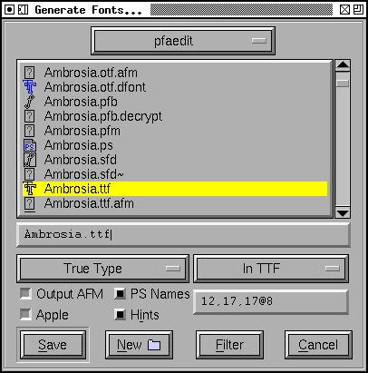
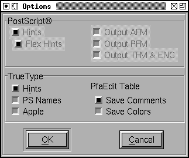
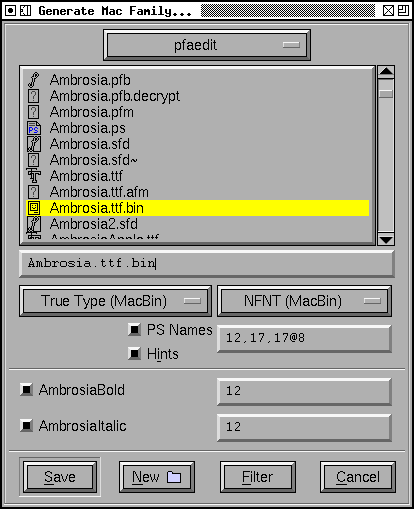

Generate Font Dialog
This generates
font files, both outline and bitmap. You may choose not to generate either,
you may generate an afm file or a pfm file, you may select the type of postscript
output, you may select which pixelsizes of bitmap to generate.
The outline types are:
-
PostScript Type1 font, binary format (a .pfb file, this may be by most modern
windowing systems)
-
PostScript Type1 font, ascii format (a .pfa file, this is used by printers)
-
PostScript Type1 font, macbinary format (a postscript font wrapped up in
a set of mac resources wrapped up in a macbinary file, to be copied to a
mac, unmacbinaried, and installed there)
If you are on a mac then a resource fork will be generated directly, macbinary
will not be used.
NOTE: The mac will not
recognize a PostScript font unless you also generate a bitmap font in NFNT
format and place it in the same directory. If you haven't created any bitmap
fonts yet, cancel this dlg and use
Element->Bitmaps Available to generate
a bitmap font, and then retry this dlg.
NOTE: Apple implies
that this format is depreciated and therefore it may not work in future versions.
-
Multiple Master(A), generates a multiple master font in ascii format (same
as .pfa)
-
Multiple Master(B), generates a multiple master font in binary format (same
as .pfb)
-
Multiple PostScript Type 1 binary fonts (this is used to convert a large
font with a two byte encoding into a series of smaller pfb (or pfa) files
with 256 glyphs in each. You may be prompted for a file to specify the
conversion. See the ttf2tfm man page for a description of these SUBFONT
DEFINITION FILES. Here is an example of what the file
should look like)
-
PostScript Type3 font (a .pt3 font, this is also used by printers and is
not encrypted)
-
PostScript Type0 font, this is only available if you have a font encoded
with Unicode or one of the CJK encodings. Type0 fonts can have up to 65536
glyphs in them (as opposed to 256 for Type1s and Type3s).
-
PostScript Type42 font (this is really a TrueType font wrapped up in PostScript)
-
PostScript Type42 CID font
-
PostScript CID font, this is only available if your font is a
CID font. This produces a font in the old Type1
CID format. You probably want to use the OpenType CID format...
-
PostScript CFF font, this is the format that lives inside the 'CFF ' table
of an opentype font. It is a valid font format in its own right.
-
True Type. The instructions (hinting) are probably not very good. No diagonal
stems are hinted. Instructing is based on the hints used for postscript,
with some additional work done for serifs, and some recognition that all
glyphs of approximately the same height should have the same height at small
pointsizes (equivalent to PostScript's BlueValues).
-
True Type Symbol. Same as True Type, except it uses the 1 byte encoding given
in the font. This is important on windows as symbol and dingbat encodings
often include characters (in the range 0x80-0x9f) which aren't mapped in
normal encodings. It is important on the Mac because I do not generate the
correct encoding tables for any script other than MacRoman, so if you want
a MacCyrillic font use this mode.
-
True Type macbinary format, a truetype font wrapped up in a mac resource,
wrapped up in a macbinary file. Designed to be used for a mac.
If you are on a mac, then a file with a resource fork will be generated directly
(macbinary will not be used).
-
True Type dfont format, a truetype font wrapped up in a mac dfont (data fork
resource file). Mac OS/X font.
-
Open Type. Officially Open Type includes True Type, but Open Type True Type
fonts are no different from plain True Type fonts, so they might as well
just be called True Type. So by Open Type I mean Open Type with a CFF Postscript
Type 2 font inside it.
-
Open Type dfont format, an open type font wrapped up in a mac dfont (data
fork resource file). Mac OS/X font.
-
Open Type CID, This is only available if your font is a
CID font. It produces an OpenType CID-keyed font.
-
SVG font
-
None
The bitmap types are:
-
BDF -- The internal bitmap fonts will be saved in bdf format. You may only
select sizes for which you have already generated fonts (you may output
anti-aliased (greymap) fonts as well as bitmaps. A 12pixel high greymap font
with 8 bits/pixel can be represented as 12@8).
-
In TTF -- Store the bitmap fonts inside the ttf file (the exact format will
depend on the settings of the Apple and OpenType bits in the Options dlg).
-
In sfnt (dfont) -- Only available if no outline font is generated. Apple
allows bitmaps to be stored within a truetype file (sfnt) even if there is
no outline font. So this generates a ttf file that just contains bitmaps
and wraps it up in a dfont.
-
NFNT (MacBin) -- Converts the bitmap fonts into Macintosh NFNT resources
and wraps them up in a mac binary file.
NFNT (Resource) -- On a mac the NFNT font will be generated in a resource
fork directly.
NOTE: Mac OS/X appears
not to support NFNT bitmaps (at least I can't get them to work).
However, the mac still needs at
least one NFNT in order to find an type1 font. Even though the bitmap is
required, it will not be used. Odd.
-
Windows FON -- Windows resource based font format.
-
Windows FNT -- Windows format, one bitmap font per file.
-
OpenType Bitmap -- this is the new X11 bitmap format with bitmaps embedded
in an sfnt wrapper (an opentype or truetype font) but with no outline data.
-
Palm fonts -- support for various palm bitmap font
formats.
-
PS Type3 Bitmap -- create a PostScript Type3 font which uses the imagemask
operator to display each glyph's bitmap.
-
None
The
options dialog provides the following check boxes.
Not all are enabled at all times.
-
[] Round -- Round all coordinates to integral values. If this is not checked
then Type1 fonts will be output with 2 decimal digits of precision, and Type2
fonts with 16 binary digits (~4 decimal digits) when needed.
-
[] Hints -- Include PostScript hints in the output file
-
[] Flex Hints -- Include PostScript flex hints in the output file
-
[] AFM -- Generate an adobe font metrics file (controls generation of .amfm
files for multiple master fonts too)
Note: Only 'liga' and 'rlig' ligatures will be output in the AFM file. If
this is not what you want, use the
ControlAfmLigatureOutput
scripting command.
-
[] Composites in AFM -- the AFM format includes a mechanism for building
composite glyphs out of components. It is roughly equivalent to the OpenType
mark-to-base feature. Almost nobody uses these data, and they can increase
the size of an AFM file enormously, but if you would like them check this
box (if your font does not include any anchor classes, this will have no
effect).
-
[] PFM -- Generate a windows printer font metrics file
-
[] TFM -- Generate a TeX font metrics file (and a TeX enc
encoding file)
-
[] Hints -- Include truetype hints in a truetype font. NOTE: This used to
generate bad truetype instructions, now it merely inserts whatever truetype
instructions are stored with the glyph. If these have been read from another
truetype font they will probably be reasonable. If they have been generated
with FontForge's AutoInstr menu command they will probably make your font
uglier.
-
[] PSNames -- Include the full 'post' (postscript name) table in the font
-
[] Apple -- Apple and MS/Adobe disagree on the format
of a ttf font. This is annoying. Checking this box means the font will be
generated according to Apple's desires, leaving it unchecked means according
to MS/Adobe's desires. Currently this controls:
-
The bitmap tables (Apple calls it 'bdat', MS/Adobe 'EBDT'. The data in them
are the same)
-
The PostScript name in the 'name' table (Apple says there must be either
0 or 1 of them, MS/Adobe say any value other than 1)
-
Apple and MS/Adobe also differ on the way references (components) are scaled.
Luckily there is another way to disambiguate this case (and references are
rarely scaled anyway).
-
The GDEF, GPOS, GSUB and prop, lcar, kern, opbd, morx, feat tables. Apple
does not support GPOS/GSUB tables. MicroSoft still supports kern tables for
some fonts but requires GPOS for others.
-
[] OpenType -- If this is checked the font will be generated with the tables
used by OpenType. If both this and [] Apple are checked the font will have
two sets of tables, Apple will look at one set, and everyone else will look
at the other.
(CAVEAT: The above statement
was true up to 10.4 ("Tiger") after 10.4, Apple will use OpenType tables
if they are present and may ignore AAT tables. Unfortunately Apple doesn't
implement all of OpenType so Apple's behavior may be
WRONG).
-
[] Old style 'kern' -- If this is checked along with OpenType then both an
OpenType 'GPOS' and an old style 'kern' table will be generated (assuming
there are any kern pairs, of course). The OpenType mailing list considers
this a bad idea (some applications may add the kerning values from both tables
they say), but it may be helpful for applications which don't support 'GPOS'
kerning.
-
[] Save Comments -- I have added my own table
('PfEd') in the truetype format in which
I can store whatever data I want. Checking this box saves all the glyph comments
into the output file.
-
[] Save Colors -- Save the glyph colors in the
'PfEd' table as well.
-
[] TeX -- Save TeX metrics in the 'TeX
' table
-
[] Output Glyph Map -- Output a file (with extension .g2n) mapping TrueType
(OpenType) glyph IDs to glyphnames (and possibly to unicode values)
-
[] Output OFM & CFG -- Output metrics files for Omega
TTF (and Open Type) fonts are usually generated in Unicode encoding, there
will also be a tiny macintosh encoding of MacRoman (and a macintosh copy
of the unicode encoding) -- the exceptions are: symbol fonts will use the
symbol encoding, KSC5601 and Wansung fonts will use Wansung, Johab fonts
will use johab, JIS208 and SJIS fonts will use SJIS, Big5 will use big5 encoding.
Fonts with a "Full Unicode" encoding will have both a 2 byte unicode encoding
table and a 4 byte table. OpenType CID keyed fonts will be saved with Unicode
encoding.
Postscript fonts are generated in whatever encoding the font is using (except
if you take a two byte encoding and generate a Type1 font (rather than a
Type0) then only the first few (256) glyphs will be encoded). Type0 does
not support a full Unicode (4 byte) encoding.
PS CID (and OpenType CID in the CFF) are saved with no encoding. The encodings
live in separate cmap files which are available from
adobe
(and perhaps other font vendors).
If you save a CID font with a format other than PS CID or OpenType CID, then
only the currently displayed subfont will be saved, with the current meaningless
glyph ordering (I suppose this is useful if you wish to extract a sub-font
from a CID font).
SVG fonts don't really have the concept of an encoding other than Unicode.
TTF (and OpenType) fonts will produce vertical metrics tables if the font
has vertical metrics enabled. Postscript encodings will not produce Metrics2
dictionaries (If someone actually wants this let me know, it can be done,
but I get the impression that nobody uses this any more).
On Mac OS/X, when generating a resource font containing a postscript font
then the filename textfield will not be present (as the filename is determined
by the fontname). You can still select a directory however.
The bitmap sizes must all be present in the font database. AntiAliased fonts
can be indicated by following the pixelsize by "@<depth>" (ie. "@8").
If you are generating a bdf font then you will be prompted for a resolution
later.
See the section on namelists for
a discussion of the "Force glyph names to" field.
If you generate a TrueType or OpenType font with the OpenType mode set (note:
the term "OpenType" means two things, a truetype wrapper around a postscript
font, or a set of tables containing typographic information -- here the OpenType
mode refers to the typographic tables) then FontForge will generate
GPOS, GSUB, and GDEF tables. These contain kerning,
ligature information, arabic forms data, anchor points, etc.
Apple does not support these OpenType layout tables. If you set Apple mode
'kern', 'opbd', 'morx', 'feat', 'lcar' and 'prop'
tables may be generated instead. (and a couple of other small differences
will appear).
If you set both Apple and OpenType then both sets of tables will be generated.
If you set neither, then only the 'kern' table will be generated, and it
will only contain pair-wise kerning (no kerning classes, no kerning by state
machine). This is the kind of kerning available in the original truetype
spec (from which both Apple and OpenType have diverged, but which both still
support).
Generate Mac Family
This
brings up a dialog very similar to the above, but with a few added fields.
Because this dialog is for Mac families, only Mac formats are supported.
Right above the [Save] button is a list of all fonts that FontForge thinks
should be included in this family, along with their bitmap info. If you don't
want a font to be in the family simply uncheck its checkbox.
The font styles that are allowed in a family are limited by the capabilities
of the mac 'FOND' resource which only allows one style of a given type and
does not support the concepts of "Light", "Black" (if there is already a
"Bold" style), "Oblique" (if there is already an "Italic" style), etc. Generally
FontForge will be able to figure out a font's style from its fontname, but
in some cases you may wish to override this by setting the
mac style directly in fontinfo.
For information on creating mac font families beyond the capabilities of
this dialog look at the FAQ.
SVG (Scalable Vector Graphics) fonts, come in two forms, one corresponds
roughly to a PostScript Type1 font, and one to a PostScript Type 3 font.
In the first format a set of contours is specified for each glyph. There
is no indication given whether the font should be stroked or filled -- that
informaton will have inherited from the graphical environment when the font
is used on text.
In the second format each glyph may contain the stroke and fill commands
needed to draw it.
FontForge usually generates the first format, but for multi layered or stroked
fonts it will generate the second format.
-- Prev -- TOC --
Next --